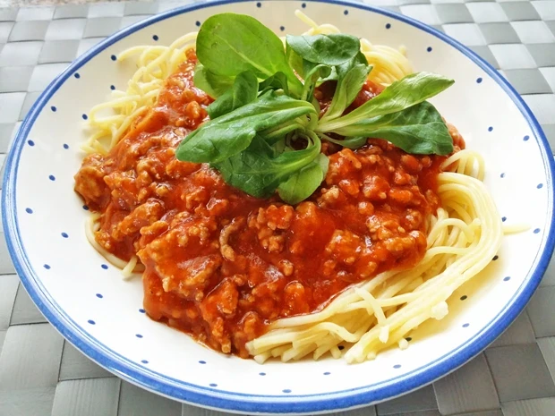

Spaghetti Bolognese
 30 Min.
30 Min.
 simple
simple
 16.10.2023
16.10.2023
Für den Salat
Für den Soße
Zubereitung
 Arbeitszeit ca. 20
Minuten
Arbeitszeit ca. 20
Minuten
 Gesamtzeit ca. 30
Minuten
Gesamtzeit ca. 30
Minuten
Die Zwiebel schälen und in kleine Würfel schneiden. Den Knoblauch schälen und in kleine Stücke hacken. Die Karotten waschen, schälen, die harten Enden vom Stiel schneiden, den Rest sehr klein schneiden oder raspeln. Die Petersilie waschen, trocken schütteln und fein hacken. Danach reichlich Salzwasser aufkochen und die Nudeln darin bissfest kochen (=al dente) und anschließend durch ein Sieb abgießen. In der Zwischenzeit das Öl in einem Topf erhitzen und darin Knoblauch sowie Zwiebel 4 Minuten dünsten. Die Karotten hinzufügen und weitere 2 Minuten mitdünsten. Nun das Faschierte beimengen und kurz durchbraten. Tomatensauce, Oregano und Rotwein hinzufügen und die Flüssigkeit etwas reduzieren lassen. Den Deckel auf den Topf geben und bei kleiner Hitze gut 40-50 Minuten köcheln lassen. Zum Schluss das Tomatenmark unterrühren und die Sauce mit Salz, Pfeffer und der Petersilie abschmecken. Die gekochten Spagetti appetitlich auf Tellern anrichten, die Sauce darüber geben und mit ein paar frischen Basilikumblättern garnieren.
Rezept erstellt von
 Anouar
Anouar